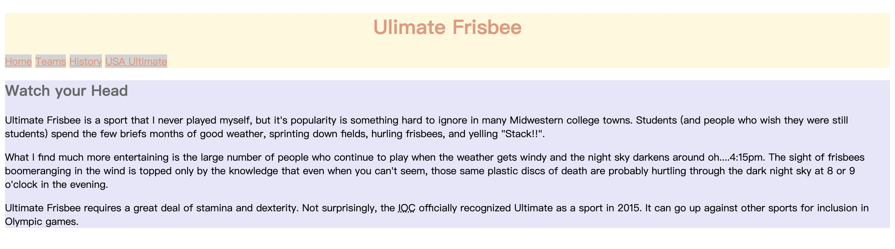
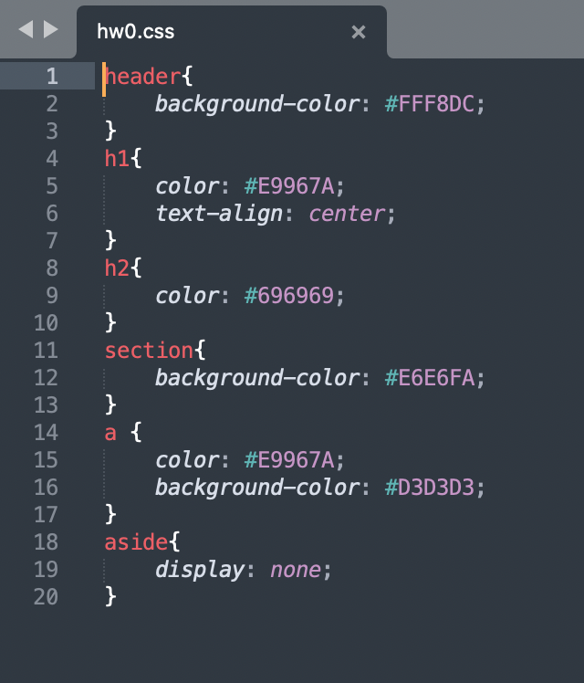
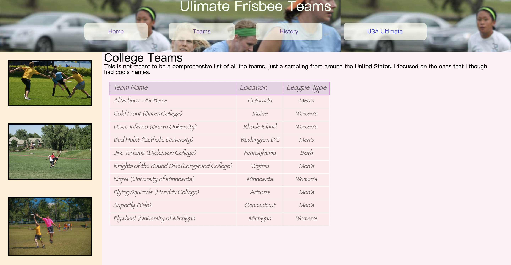
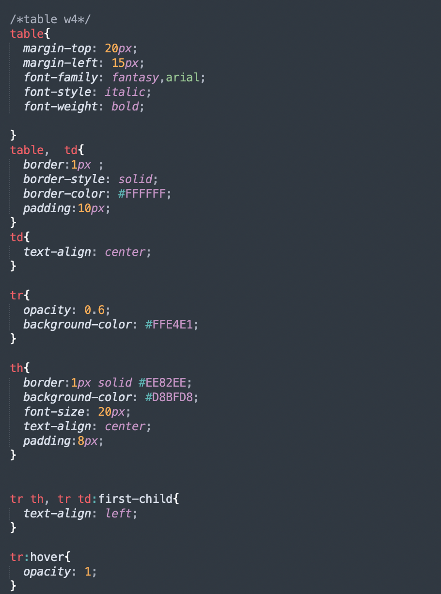
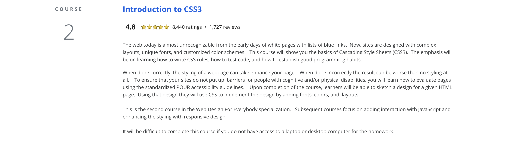

（二）課堂實作
實作一：第一週課程project
此project為把圖一的網站變成圖二形式的網站，Style the text and let the images disappear 讓我初步操作目前教的內容

圖一：原本的網站

圖二：後來style完的圖片

實作一的程式碼
2
CSS (Cascading Stylesheets) 主要功能為將網站中的內容分級分類，讓閱讀視窗者清楚的閱讀網站中的內容。例如：我們會用比較大的字體來區分標題和內容細節，或用不同顏色的字，區分比較重要的內容。
因為有些project需要請不同地區上這一系列課的同學評分，因此成績送出與證書的時間會比較晚
此project為把圖一的網站變成圖二形式的網站，Style the text and let the images disappear 讓我初步操作目前教的內容
圖一：原本的網站
圖二：後來style完的圖片
實作一的程式碼
這個project的目標為把第一週的網站弄成下圖這樣，把圖片放到左邊，把link 排整齊等，把網站重新整理，換成另一種樣貌，此實作一樣讓我們練習前面幾週教的功能與技巧
這個最後一個project是要美編第二週所美編的網站的Teams 那頁，確認我們對於這週教的美編表格程式的熟練度
 這一系列的課是我覺得上下來問題最多的一個系列，常常卡關，不知道要怎麼調才會和心裡想的是一樣的，雖然很喜歡做美編，自己設計顏色、擺設，但因為常常一點點錯誤就會讓整個網站不平衡，常常需要花很多時間思考網站會出現error的原因。平常聽老師講一些概念很容易，自己真正實作的時候就很常出問題，但經由多次練習我覺得多做多累積經驗真的有效，以前常常會出現很多格式上的問題像是沒有end tag之類的，使得擺設怪怪的，後來經過多次出錯，這個現象就比較少出現，我常常會先把end tag打出來，讓自己比較不容易忘記。其中，最喜歡CSS的部分是把網站美編的合乎己意時的成就感。
